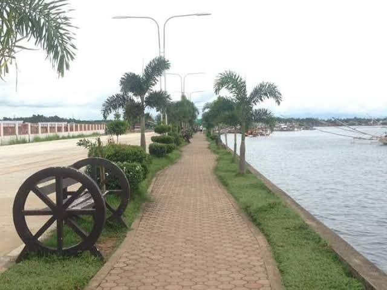
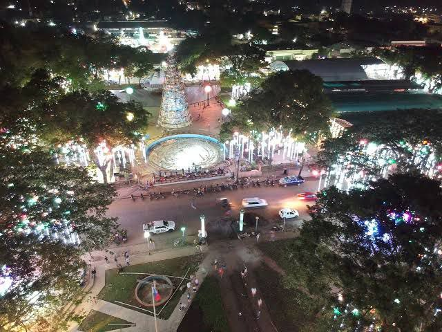

Is a popular seaside destination in Pagadian City, Zamboanga del Sur. It is known for its scenic view of Illana Bay, cool sea breeze, and relaxing atmosphere. The boulevard is a favorite spot for walking, jogging, watching sunsets, and spending time with family and friends, especially in the afternoon and evening.
Is a well-known area famous for its fresh seafood market and coastal location. It serves as a center for fish trading and local commerce, offering visitors a glimpse of daily life by the sea. Palpalan is also appreciated for its busy yet community-oriented atmosphere and its role in supporting the local economy.

Is a central public space known for its open grounds and community gatherings. It serves as a venue for events, celebrations, and leisure activities, making it an important place for social interaction and relaxation in the city.